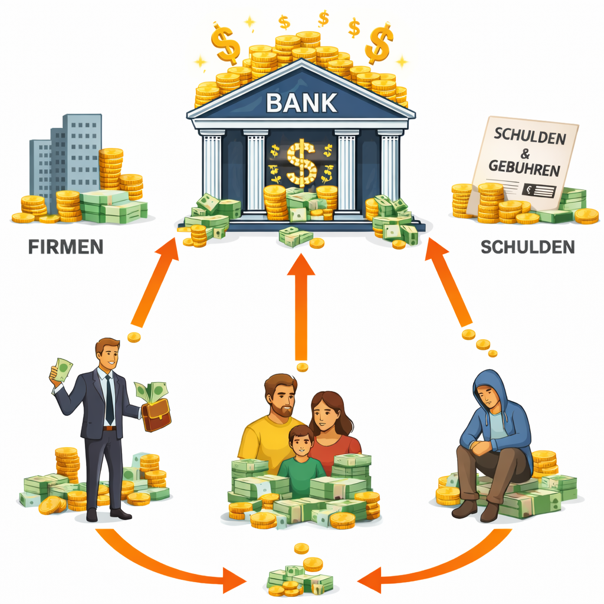
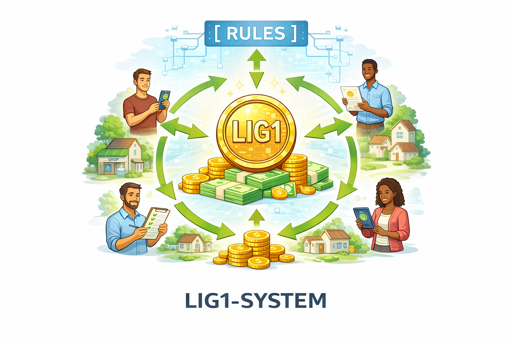
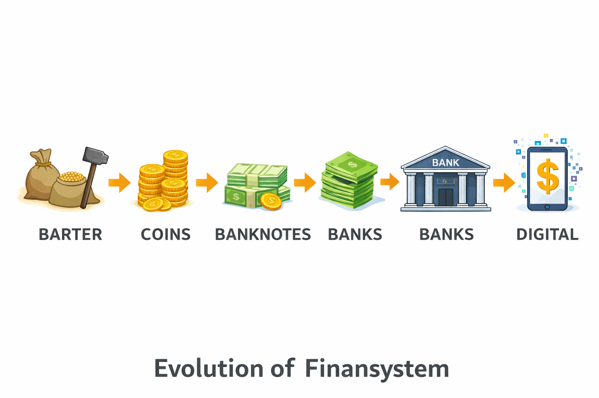
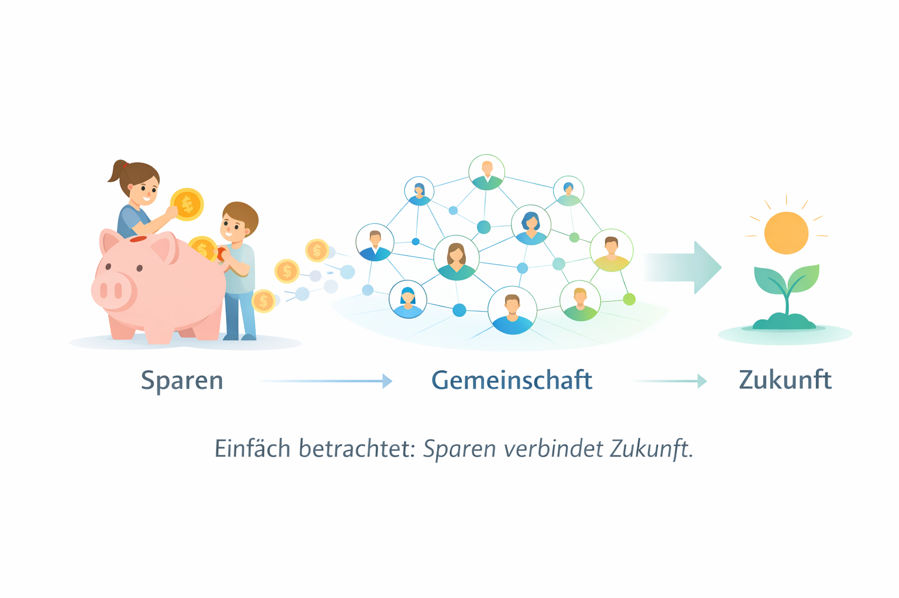
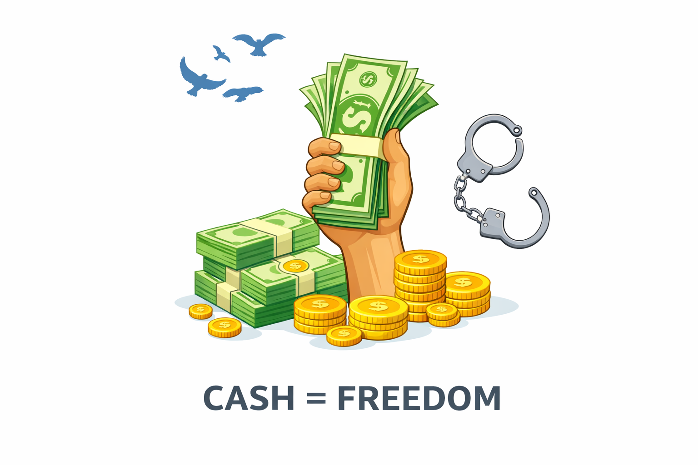

LIG1 ist die Alternative.
Ein Finanzsystem für die Menschen, die den wirtschaftlichen Wert schaffen.
MitmachenDas heutige Finanzsystem ist über viele Jahrzehnte entstanden und besteht aus einer Vielzahl von Institutionen, Märkten und wirtschaftlichen Mechanismen. Banken, Zentralbanken, Finanzmärkte und politische Entscheidungen greifen ineinander und beeinflussen wirtschaftliche Entwicklungen auf komplexe Weise.
Für Fachleute, die täglich mit diesen Strukturen arbeiten, sind viele dieser Prozesse selbstverständlich. Für viele Menschen außerhalb dieser Bereiche bleiben sie jedoch schwer nachvollziehbar.
Wenn wirtschaftliche Systeme schwer verständlich sind, entsteht häufig Unsicherheit. Menschen möchten verstehen, wie wirtschaftliche Entscheidungen entstehen, welche Regeln gelten und welche Auswirkungen diese Entscheidungen auf ihr eigenes Leben haben.
Ein verständlicheres System könnte dazu beitragen, das Vertrauen in wirtschaftliche Strukturen langfristig zu stärken.

decoding="async">
Die Idee eines communitybasierten Finanzsystems entsteht aus dem Wunsch nach mehr Transparenz, klareren Regeln und einer stärkeren Beteiligung der Menschen an wirtschaftlichen Entwicklungen.
Ein solches System könnte darauf ausgerichtet sein, wirtschaftliche Prozesse verständlicher zu gestalten und Strukturen zu schaffen, die für Menschen nachvollziehbarer sind.
Statt ausschließlich auf komplexe Institutionen zu setzen, könnte ein communitybasierter Ansatz mehr Offenheit, Beteiligung und Transparenz ermöglichen.
Diese Vision bedeutet nicht, dass bestehende Systeme vollständig ersetzt werden müssen. Vielmehr geht es darum, neue Ideen zu entwickeln, die wirtschaftliche Organisation langfristig verbessern können.
Die Geschichte des Finanzsystems zeigt, dass wirtschaftliche Strukturen sich ständig verändern. Vom einfachen Tauschhandel über Münzen bis hin zu modernen Bankensystemen haben sich die Formen des wirtschaftlichen Austauschs immer weiter entwickelt.
Mit der Digitalisierung entstehen heute neue Möglichkeiten, Werte zu speichern, zu übertragen und zu organisieren. Digitale Technologien verändern bereits jetzt, wie Menschen weltweit miteinander handeln und wirtschaftlich zusammenarbeiten.
Diese Entwicklungen eröffnen neue Perspektiven für zukünftige Finanzsysteme, die transparenter und effizienter funktionieren könnten.


Das Sparschwein steht seit Generationen für verantwortungsvollen Umgang mit Geld. Schon früh lernen Menschen, dass es sinnvoll sein kann, Ressourcen bewusst einzusetzen und langfristig zu planen.
Diese Idee ist auch für moderne Finanzsysteme wichtig. Ein nachhaltiger Umgang mit wirtschaftlichen Ressourcen trägt dazu bei, stabile wirtschaftliche Strukturen zu schaffen.
Ein zukunftsorientiertes System sollte daher nicht nur kurzfristige Gewinne berücksichtigen, sondern auch langfristige Stabilität und gesellschaftliche Verantwortung.
Bargeld hat für viele Menschen eine besondere Bedeutung. Es ermöglicht direkte Kontrolle über eigene finanzielle Mittel und steht für persönliche Freiheit.
Wer Bargeld besitzt, kann unabhängig entscheiden, wie und wann es verwendet wird.
Auch in einer zunehmend digitalen Welt bleibt Bargeld für viele Menschen ein wichtiger Bestandteil wirtschaftlicher Selbstbestimmung.

LIG1 bietet ein communitybasiertes Finanzsystem.
Ein Finanzsystem für alle, statt nur für wenige.
In diesem System arbeitet Geld für die Gemeinschaft und nicht nur für einzelne Interessen.
Die Menschen, die den wirtschaftlichen Wert schaffen, stehen im Mittelpunkt.
Weitere Informationen über das Projekt finden Sie hier:
Parallel zur Entwicklung eines communitybasierten Finanzsystems ist die Gründung einer Stiftung geplant. Diese Stiftung soll Menschen unterstützen, die bisher nur begrenzten Zugang zu wirtschaftlichen Chancen haben.
Damit verbindet sich die Idee, wirtschaftliche Innovation mit sozialer Verantwortung zu verknüpfen.